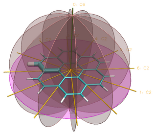
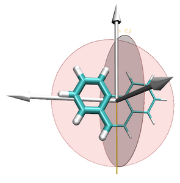
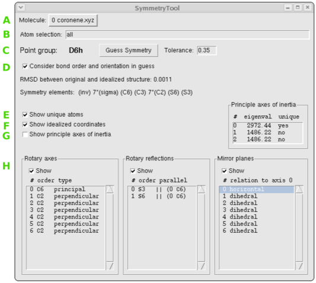

The Symmetry Tool plugin provides an easy-to-use graphical interface to the
"measure symmetry" command. It determines the
symmetry pointgroup of a given selection and displays the symmetry elements
(inversion center, mirror planes, rotation axes, rotary reflection axes).
The underlying algorithm is fairly robust and can handle molecules whose
coordinates deviate to a certain extent (controlled by the tolerance
parameter) from the ideal symmetry. The closest match with the highest
symmetry is returned.
Explanation of the GUI elements

- (A) Chosse the molecule you want to work with
- (B) The selection for which the symmetry shall be determined
- (C) Pressing the button causes the symmetry to be analyzed and the guessed
point group will be updated. The tolerance of the algorithm when
considering wether something is symmetric or not can be controlled.
A smaller value signifies a lower tolerance.
- (D) If this flag is set then the bond order (if specified in the structure)
and orientation of bonds are considered when comparing structure the
structure with its images.
- (E) Highlight a set of connected, symmetry unique atoms.
- (F) Snap atoms into idealized symmetric positions.
- (G) Display the principle axes of inertia a arrows. Non-unique axes of
inertia are shown as small arrows only. They can be arbitrarily rotated
around the unique principal axis.
- (H) Lists of found symmetry elements. If you select an element in the list
it will be highlighted in the structure.